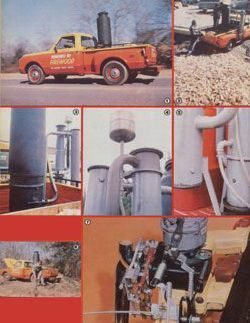
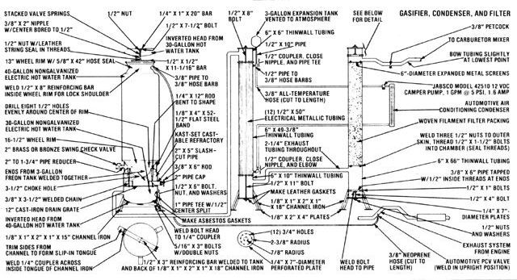
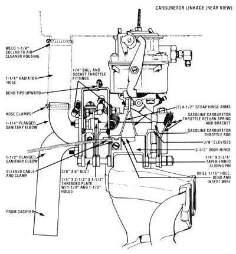
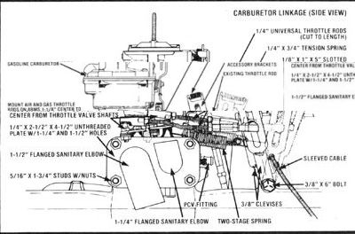

1,500 miles of alternative, free-fuel driving, and there's a lot more where that came from: We were pleased to report in Homemade Motor Fuel ... From Firewood that our experiments concerning the use of wood scraps for vehicle motor fuel showed promise. But little did we realize, at that time, just how well the unlikely form of "solid" energy would work in a "liquid" world.
In short, for a total cost of about $125 - and a fair amount of cutting and welding - we've come up with an alternative fuel power system that not only moves our rig down the road as smoothly and reliably as any conventionally powered automobile, but does so at zero fuel cost!
(Click here and here for a downloadable version of the contruction illustrations.)
Here's how the system works: Wood scraps (we use chunks that are larger than sawdust or shavings, but smaller than a 6" length of 2 X 4) are contained in a modified hot water tank, and rest on a cone-shaped, cast-refractory hearth. The recycled vessel is airtight . . . except for a spring-loaded and sealed fill lid, a capped lighting aperture, and an inlet port (the last is simply a two-inch brass swing check valve, which allows the "draw" created by the engine to pull controlled amounts of air into the firebox).
Incoming "atmosphere" is directed through a series of holes drilled into one shoulder of a discarded wheel rim (which is girdled with a circular band of strap metal and fastened to the bottom of the tank), and supports combustion in the vicinity of the hearth. As the fuel in that area burns, it consumes the oxygen in the air-creating carbon dioxide and water vapor-and forms a bed of glowing charcoal, which collects on a grate sus pended from chains several inches below the hearth assembly. (Simultaneously, a heat-induced "decomposition" zone is created right above the combustion region . . . driving gases from, and carbonizing, the wood prior to its incineration.)
The mixture of CO2 and moisture-in addition to some creosote-is then drawn through a "choker" (positioned between the hearth and the charcoal grate) and forced into the embers at the lower part of the tank before leaving the gasifier. The choke serves as an air restricter which blends the various vapors and directs them through the glowing coals, where they're reduced to the combustible gases carbon monoxide, hydrogen, and-in small amounts-methane. The final product also contains a good deal of nitrogen, along with some unconverted CO 2 and traces of tar and ash.
The carbon dioxide and nitrogen are inert, and such nonfuels pose no threat to the powerplant. However, the tar and ash must be removed from the gas, or they may produce deposits and, perhaps, result in engine damage. So, to clean the fuel, the "smoke" is first routed through a liquid-cooled "densifier" (a multitubed heat exchanger surrounded by a water jacket and plumbed into a junk automobile air conditioning condenser that's mounted in front of the existing radiator), which precipitates moisture and residue from the gas. Then it passes on to a tubular filter that's [1] packed with strands of commercial air conditioning filament, woven transport padding, or a similar material that won't disintegrate, rust, or burn, and [2] equipped with perforated flame traps at its entrance and its exit.
The final strainer catches the remnants of ash and tar in the gaseous fuel, which then travels through a slightly bowed horizontal tube (where most of the little remaining moisture is trapped) and on into the engine.
To allow for the use of either wood gas or gasoline, our research crew fabricated a unique mixing chamber and linkage setupusing scrap carburetor parts, a pair of old brackets, some cabinet door hinges, and three clevises - that seems to suit the nature of producer gas to a T.
Because the vaporous fuel has a fairly low BTU value (and because the amount of usable power contained in the wood "smoke" can be affected by engine speed, load, moisture, and other factors), the proportion of gas to air has to be much greater than that of, say, a propanepowered engine. But the driver must be able to adjust the mix in transit - if the wood gas system is expected to maintain a consistent degree of performance under all types of driving conditions - yet he or she shouldn't have to be constantly manipulating controls.
Well, our team came up with a design that meets all of those requirements. They first scrounged up a fourinch length of 1/8" X 2" X 4" tubular steel, and - using the stock gasoline carburetor and manifold as a template-drilled fuel passage and mounting holes through its broad upper and lower surfaces. Next, they sealed up the tube's "inboard" end with a piece of scrap metal . . . trimmed out a section of 1/4" X 2-1/2" X 4-1/2" plate . . . and bored and tapped 5/16" mounting-stud holes at each corner of this panel, spacing the openings to correspond with the base of a Ford Autolite/Motorcraft 5200 or a Holley 5210 two-barrel carburetor. (These particular units were original equipment on Pintos and Vegas, respectively, and they should be readily available in auto wrecking yards, as scrap, for a very reasonable rate.)
The next step was to drill 1-1/4" and 1-1/2" holes in the plate, to match the carb's primary and secondary throttle bores, then weld the newly fashioned piece of hardware onto the uncovered end of the tubular steel chamber. (Our researchers also made a second flange, identical to the first one except for the fact that its corner holes were straightdrilled rather than threaded, and then they relocated the formerly manifold-mounted PCV vacuum fitting to the box, to eliminate any possibility of its interfering with the new hardware.)
At this point, the throttle body was removed from the rest of the carburetor (just at the bottom of the float bowl and about 3/4" below the venturis) with a hacksaw, its "cut" surface was filed flat, and four of its internal passageways - the idle screw feed, both idle transfer holes, and the distributor vacuum port - were permanently sealed with small ball bearings (lead shot could have been used instead) and silicone.
The rest of the procedure involved threading the four 5/16" X 1-3/4" studs into place, sliding the throttle body over them (shafts upward), slipping 1-1/4" and 1-1/2" flanged sanitary elbows through the appropriate openings in the second unthreaded mounting plate, applying some silicone sealant at the flanged terminus of each pipe, and securing the entire assembly with some lock washers and nuts. The unit was then mounted on the manifold - with the gasoline carburetor on top - after 2"-longer carb-mounting studs and gaskets were installed.
In this configuration, with the wood gas supply hose connected to the 1-1/2" fitting and the smaller elbow leading to the air filter chamber, the engine can be made to operate in several modes. Furthermore, switching from one to another is as simple as pulling the cable that governs an uncomplicated but unique selective linkage assembly.
Our system is based on an in-line series of three 3/8" clevises and a modified door hinge, which all pivot on a single 3/8" X 6" bolt that's fastened to an existing mounting hole in the manifold. By referring to the accompanying color photograph, you can see that the extreme left (silver) clevis controls the forward (wood gas) throttle plate, the central (red) fastener governs the movement of the rear (fresh air) valve, and the far right (black) U-clasp puts the gasoline carburetor's accelerator rod in motion.
The broad blue arm in the middle of the assembly functions as a master control, and is connected to the truck's "gas" pedal. This component is merely half of a 3-1/2" door hinge with two "feet" welded to its flat end (to allow it to pivot), and a two-sided yoke-made from a pair of 4-1/2" strap hinges-welded to the opposite, curved edge. A sliding, taper-ended pin-measuring 1/4" X 2-3/4" and controlled by a sleeved cable terminating at the dashboardrests in the loops of the door hinge . . . and, as it moves laterally, this simple arrangement regulates the operation of either the gasoline or the wood gas (or both) throttle. (In addition, a slotted bracket attached to each producer gas clevis allows both the fuel and air "damper" travel within the Pinto carb throttle body to be adjusted, to achieve the best combustion ratio.)
Then - for further flexibility - our researchers modified the linkage once more, a change which made a great difference with respect to the engine's performance under the sorts of unpredictable traffic conditions that the everyday driver might encounter. Instead of allowing the sliding control pin to move both "smoke fuel" clevises at the same time, they drilled an access hole in only the right shoulder of the air mix (red) arm and fastened a short spring between the lever's slotted bracket and that of its silver-colored (wood gas) neighbor. Next, they determined the position of both the air and wood gas throttle rods when the "flap" valves within the two-port carb body were fully open, then carefully installed a two-stage spring on the air control lever so the secondary, or stouter, coil would come into play exactly at that point in the progression.
The final modifications included tackwelding a small stop onto the shaftmounted arm of the producer gas throttle valve to prevent it from revolving past its full-open position . . . and driving a 1/8" X 3/4" roll pin into a hole in the upper surface of the Pinto carburetor body, which allows the air "damper" to travel beyond its maximum flow location, yet keeps it from going so far as to close it again completely.
In use, the dual-fuel setup is very effective. With the dashboard control cable pushed in, the truck runs solely on gasoline, as usual . . . but when the handle is pulled to its midway position, both the wood gas and petrol throttles function . . . allowing the motorist to pull away while rapidly bringing the gasification unit up to a good fuel-producing temperature. (our system, unlike most others, doesn't incorporate a power-sapping and potentially dangerous blower fan to get the coals glowing after the wood fuel is lighted with a match at the beginning of the day. The engine vacuum produced when the truck is running in its half-and-half mode provides enough draft to guarantee an adequate supply of "smoke" fuel after only a mile - or several minutes-of warm - up driving.)
Once the coals are up to heat, the cable can be fully extended and the engine run on producer gas alone. Since, in this configuration, there's not sufficient draw to influence the carburetor, very littleif anygasoline enters the manifold through that atomizer's idle circuit. And furthermore, the adjustable progressive throttle assembly allows the engine to receive the proper air/wood gas ratio at all times . . . and the driver can, in addition, feel the powerplant's response to any given traffic situation and make corrective changes with the accelerator pedal.
Like any device that depends upon "unfamiliar" technology, our scrap-fired pickup does take some getting used to . . . and it, admittedly, has some drawbacks that should be carefully considered. For one thing, the power output of the engine is noticeably reduced. Even though the truck starts easily, and idles and runs smoothly, the relatively low-BTU fuel smokes the tiger right out of its tank. (As one of our mechanics noted, "It's like driving with two pistons removed.") Nonetheless, with the ignition timing advanced to accommodate the high "octane" fuel, the truck keeps up with traffic easily, and can maintain speeds beyond the legal limit.
A second, and extremely important, factorone that cannot be overemphasized - is the potential danger from carbon monoxide gas that may find its way out of the cooker or the supply pipes. If care is taken in the construction of the system, and no leaks are present, the engine will consume the toxins . . . exhausting CO2 emissions which - throughout our preliminary tests - registered 33%, lower than those given off in the gasoline mode. (Hydrocarbon emissions were reduced by half!) However, breathing the fumes from even a small breach in the fuel feed pipe - or the smoke given off when the gasifier is reloaded-could cause severe headaches and a feeling of intoxication. And exposure to the odorless, colorless, and highly poisonous carbon monoxide fumes can bring about collapse or-in an extreme case-even death! (Of course, the exhaust pipe of every automobile puts out the same toxic gases . . . although in much smaller concentrations than would occur should the supply line feeding unburned smoke fuel to the engine rupture.)
Finally, wood power simply isn't as convenient as are the more conventional methods used to get you down the road. We've found that the filter medium should be replaced every several hundred miles, and the condenser ramrodded with a shot-gun cleaning brush (or flushed with a garden hose) and drained periodically.
It would be difficult to find fault with the price of the fuel, however. Virtually every bit of wood used in our approximately 1,500 miles of producer gas driving has been obtained for free . . . and we've burned everything iron castoff shop scrap to dead roadside brush to contractors' tailings (by the pile! ). Furthermore, our local electric company was more than happy to get rid of a truckload of chipped trimmings cut from trees that had been encroaching on the powerline's right of way. And, even though the fuel hasn't cost us anything, we've found that the truck is thrifty with the wood it uses. Our vehicle, with a full wood supply and passenger load, goes about one mile on a pound of chunks . . . which figures out to some 75 miles per tankful.
Additionally, folks who might be con cerned about the smoke's effect on the engine can take solace in the fact that we've checked the manifold, valve seats, and combustion chamber for signs of deposits and wear . . . and discovered that the parts were surprisingly clean.
With reliable economic analysts predicting fuel prices of over $2.50 per gallon within the next year or two, it'd be difficult to imagine anyone not willing to investigate alternatives now, in preparation for the future. (In fact-even at today's gasoline prices-fewer and fewer people can really afford to travel!) And, of the motor fuel options available today, wood gas is certainly one of the easiestand least expensiveto produce and use.
Furthermore, the gasification process isn't limited to highway applications. Our researchers are adapting the technology to a 10KW stationary generating unit right now, and you can be sure we'll be taking a closer look at that woodfired "homestead utility" in a future issue.
(You can order detailed plans for a wood gas generator.)
|
 MOTHER EARTH NEWS EDITORS You can run a truck on alternative fuel with a wood-gas generator by using wood scraps or firewood for fuel. This article includes detailed diagrams, photographs and how the wood/gas generator was constructed. |
 MOTHER EARTH NEWS EDITORS Click here for a downloadable version of this illustration. |
 MOTHER EARTH NEWS EDITORS Click here for a downloadable version of this illustration. |
|
 MOTHER EARTH NEWS EDITORS Click here for a downloadable version of this illustration. |
|
|